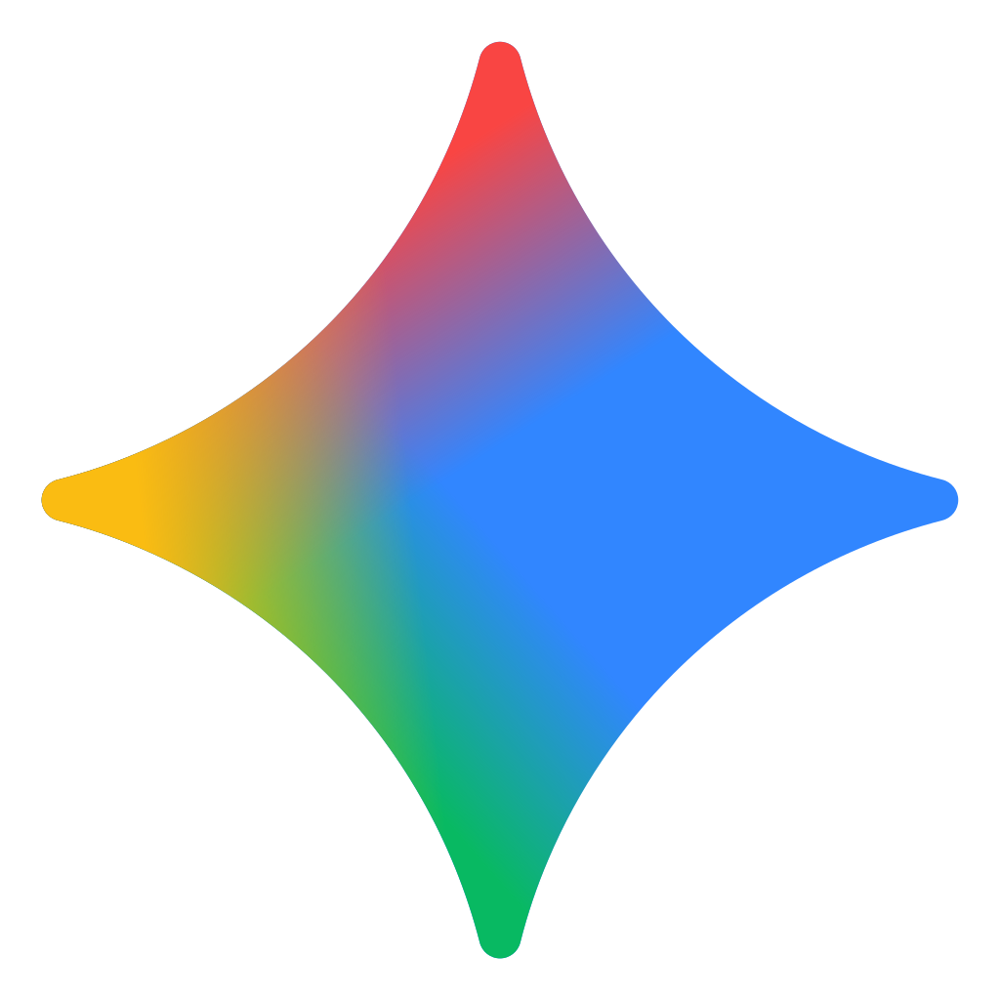

Descubra o que a Inteligência Artificial é capaz de criar
Aprenda a usar IA de verdade para o seu dia a dia
Tire 10 minutos para entender mais sobre Inteligência Artificial
Iniciar Jornada Ver TópicosO que é Inteligência Artificial?
Em palavras simples, é fazer o computador realmente "pensar".
Pense na IA como um assistente inteligente que aprende com exemplos, assim como uma criança aprende a reconhecer um gato. Ela entende o que você escreve, responde como uma conversa e ajuda desde coisas simples, como criar uma lista de compras, até explicar assuntos complexos de um jeito fácil. É como ter alguém sempre à mão para facilitar sua vida e abrir novas possibilidades.
.png) Onde usar a IA no dia a dia?
Onde usar a IA no dia a dia?
Hoje, a inteligência artificial alcançou um nível muito avançado, oferecendo inúmeras funções disponíveis gratuitamente para todos. Antes, já era possível encontrar diversas informações com uma simples pesquisa no Google, mas agora, com essa tecnologia, os resultados se tornaram muito mais pessoais e individuais, adaptados à forma como cada pessoa interage.
Ela pode simplificar o uso de computadores e celulares, oferecendo suporte personalizado — desde organizar suas finanças, planejar uma viagem ou até mesmo criar uma imagem para postar nas redes sociais.
Exemplos Práticos:
-
Criação e consulta de receitas
Exemplos: criar receitas com ingredientes disponíveis, adaptar pratos para dietas específicas, sugerir acompanhamentos e temperos ideais.
Prompt exemplo:“Crie uma receita simples e saborosa usando apenas arroz, frango e legumes, ideal para o jantar.”
-
Planejamento de viagens e roteiros
Exemplos: sugestão dos melhores pontos túriscos da cidade, ajuda com custos da viagem, pesquisa de melhores preços
Prompt exemplo:“Monte um roteiro de 3 dias em Porto Seguro com transporte público com os pontos túriscos mais interessantes”
-
Busca e criação de músicas
Exemplos: pesquisar músicas realmente similares, descobrir o nome de uma música, identificar o gênero musical.
Prompt exemplo:“Me mostre 5 músicas parecidas com ‘Leandro e Leonardo - Pense em Mim’, com o mesmo estilo de violão e clima emocional.”
 Primeiro contato com a IA
Primeiro contato com a IA
Experimente a IA pela primeira vez
Criamos uma área de conversa com inteligência artificial especialmente para você sentir os gostinho de como é conversar com essa tecnologia de ponta. Explore à vontade, sem custo algum, clicando no botão abaixo!
A IA no Trabalho: Muito Além da Automação
A inteligência artificial já faz muito mais do que responder perguntas: ela pode automatizar tarefas repetitivas, organizar suas informações e até criar imagens e documentos prontos para uso — tudo de forma acessível, sem saber programar.
Como a IA já está moldando o mercado de trabalho
Segundo pesquisa da McKinsey de 2025, mais de 75% das empresas já utilizam IA em pelo menos uma função de negócio. Ainda de acordo com a McKinsey, 92% das empresas pretendem aumentar seus investimentos em IA nos próximos três anos. Dessa forma, a adoção da IA por todas as empresas não é mais uma questão de "se", mas de "quando". Logo, entender como usar essa tecnologia de forma ética e eficaz será uma habilidade essencial para qualquer profissional.
No Brasil o cenario não é diferente. Segundo a pesquisa da FGV revela que 80% das empresas brasileiras já reconhecem o uso de IA generativa em suas atividades diárias, embora muitos admitam que o uso ainda é inicial ou limitado.
Áreas em que a IA já gera produtividade
- Planilhas e relatórios: Organização, análise de dados e criação de fórmulas complexas em segundos.
- Design e comunicação: Apoio em layouts, cartazes, convites, posts e apresentações mais profissionais.
- Documentação: Criação de textos técnicos, resumos e padronização de materiais.
- Diversas áreas: A IA pode ser utilizada em diversos contextos, como projetos, leis, programação, marketing, vendas, negocios e muitas outras áreas.
Entenda que essa tecnologia não veio para substituir profissionais, mas para ampliar nosso potencial. Ela funciona como uma assistente incansável, pronta para agilizar tarefas repetitivas, liberar tempo e até abrir novos caminhos criativos.
Para pensar:
Como usar a IA de forma ética e responsável no seu dia a dia? Ela pode acelerar tarefas e ampliar a produtividade, mas decisões estratégicas continuam precisando da experiência e do julgamento humano.
Assista essa pequena palestra da USP TALKS:
.png) Como "Conversar" com a IA (A Arte do Prompt)
Como "Conversar" com a IA (A Arte do Prompt)
O "prompt" é simplesmente o comando ou a pergunta que você faz para a IA. Quanto melhor o seu pedido, melhor será a resposta. É como pedir um café: se você só disser "quero um café", pode receber qualquer coisa. Mas se disser "quero um café expresso, curto e sem açúcar", a chance de receber exatamente o que você quer é muito maior.
Dicas para Criar Bons Prompts:
- Seja Específico:
- Ruim: "Fale sobre marketing."
- Bom: "Crie 5 dicas de marketing digital para uma pequena floricultura que quer aumentar suas vendas online."
- Dê um Contexto:
- Ruim: "Escreva um e-mail."
- Bom: "Escreva um e-mail profissional e amigável para um cliente, agradecendo pela parceria no último ano e desejando boas festas."
- Defina o Formato: - Peça para a IA responder em formato de lista, tabela, parágrafos, etc. "Liste os prós e contras...", "Crie uma tabela comparando..." Exemplo de Prompt Completo:
"Crie 5 ideias de postagens para Instagram (formato: lista com título e descrição curta), para uma loja de roupas femininas que está promovendo sua coleção de inverno, focando em atrair mulheres de 30 a 50 anos que buscam estilo e conforto."
Dica prática: para começar sem risco, experimente formatar texto, ideias, rascunhos. Conforme se sentir confortável, avance para documentos e automações mais importantes.
O Futuro é Agora: O que esperar da IA?
A Inteligência Artificial está evoluindo rapidamente e vai transformar ainda mais nossas vidas e trabalhos. Mas não há motivo para ter medo. Pense na chegada da internet ou dos celulares: foram grandes mudanças que trouxeram desafios, mas também oportunidades incríveis.
Reflexões Importantes:
- Aprendizado Contínuo: A habilidade mais importante será a nossa capacidade de aprender coisas novas e nos adaptar.
- Ética e Responsabilidade: Como sociedade, precisamos discutir como usar a IA de forma justa, transparente e que beneficie a todos.
- O Fator Humano: Criatividade, pensamento crítico, empatia e inteligência emocional são qualidades humanas que nenhuma máquina pode replicar. Elas se tornarão ainda mais valiosas.
.png) Ferramentas para Começar a Usar Hoje
Ferramentas para Começar a Usar Hoje
O mundo da IA é vasto, mas você não precisa conhecer tudo. Aqui estão algumas das ferramentas mais populares e acessíveis (muitas com versões gratuitas) para você começar a explorar:
Para Conversar e Criar Textos:
-
.png) ChatGPT (Celular/Navegador): Uma das IAs mais conhecidas e completas. É rápida, intuitiva e permite personalização para sua preferencias e gosto, oferecendo uma experiência de conversa natural, sendo também uma das melhores opções para criação de imagem.
ChatGPT (Celular/Navegador): Uma das IAs mais conhecidas e completas. É rápida, intuitiva e permite personalização para sua preferencias e gosto, oferecendo uma experiência de conversa natural, sendo também uma das melhores opções para criação de imagem.
Acesse em: https://chat.openai.com/
-
 Copilot (Celular/Navegador/Windows): Vem junto ao Windows e Microsoft 365, é ideal para produtividade em principalmente nas empresas onde vem junto ao Word, Excel e PowerPoint. O Copilot Studio permite personalizar funções e automatizar tarefas.
Copilot (Celular/Navegador/Windows): Vem junto ao Windows e Microsoft 365, é ideal para produtividade em principalmente nas empresas onde vem junto ao Word, Excel e PowerPoint. O Copilot Studio permite personalizar funções e automatizar tarefas.
Acesse em: https://copilot.microsoft.com/
- DeepSeek (Celular/Navegador):
Alternativa chinesa ao ChatGPT, porém menos personalizável. Ganhou destaque pela clareza e eficiencia, além de dar respostas mais elaboradas, mas ainda há dúvidas sobre privacidade e segurança no uso.
Acesse em: https://chat.deepseek.com/
-
 Gemini (Celular/Navegador): Desenvolvido pelo Google, substitui o Assistente no Android, pode ser usado de forma mais avançada em Google AI Studio, sendo ótimo para quem quer explorar APIs e visualização de imagens.
Acesse em: https://aistudio.google.com/
Parabéns por concluir a jornada!
Obrigado por se aventurar conosco durante essa jornada de aprendizagem! Entender o que é IA é a melhor forma de se preparar e aproveitar as oportunidades que ela oferece. O futuro não é algo que assistimos acontecer, mas algo que ajudamos a construir.